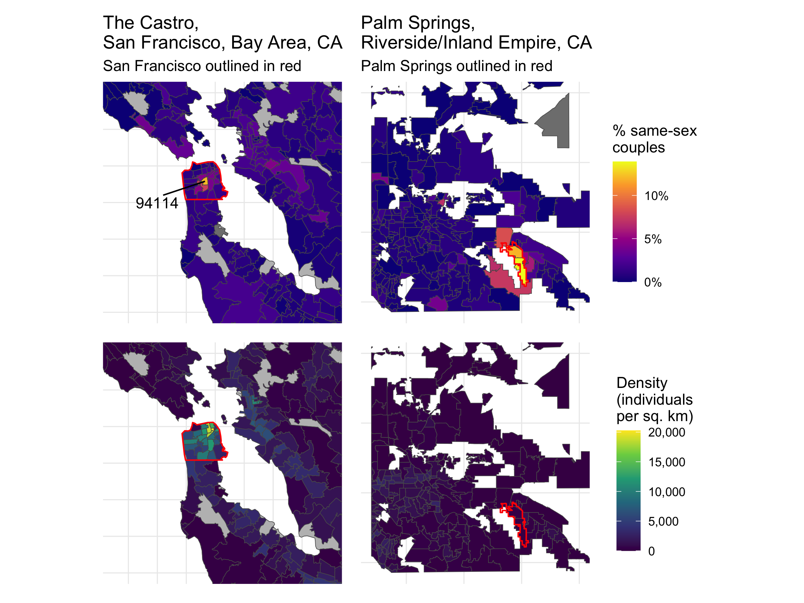
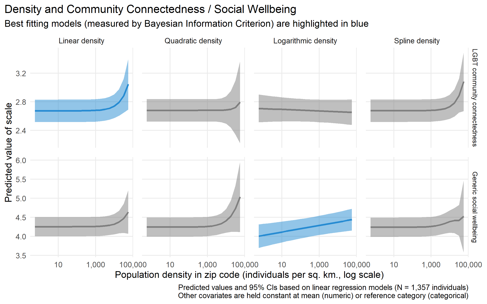
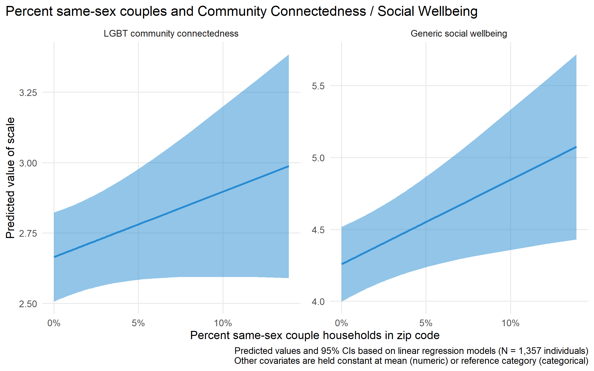
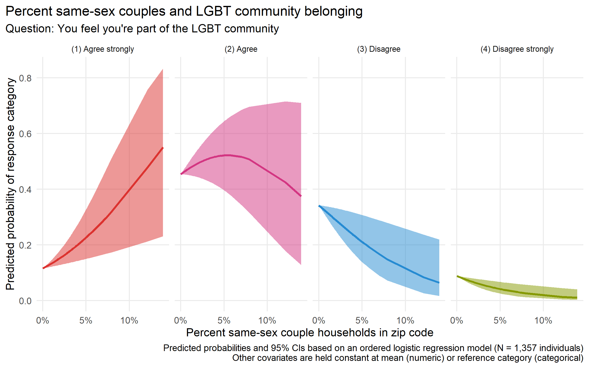
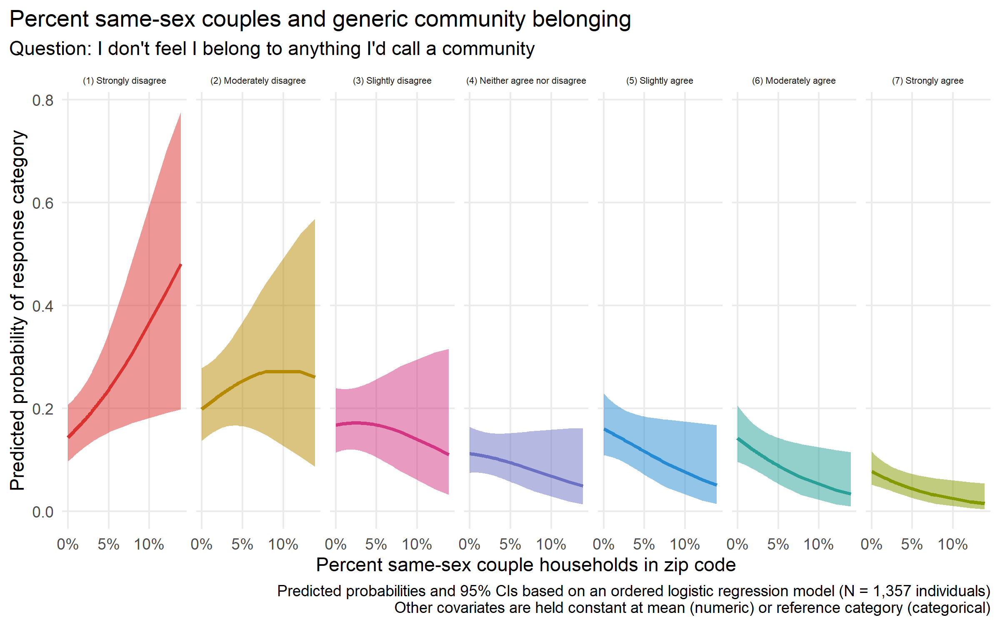
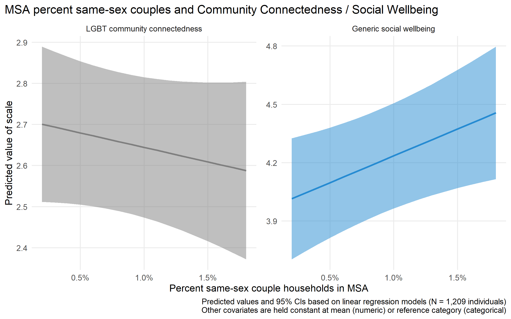

| Median | Mean | Std. dev. | |
|---|---|---|---|
| Zip codes in the Generations study (N = 1,238) | |||
| Population density (individuals/sq. km) | 1,000 | 2,500 | 5,200 |
| Percent same-sex couple households | 0.8% | 1.1% | 1.1% |
| MSAs in the Generations study (N = 217) | |||
| Weighted population density (individuals/sq. km) | 1,200 | 2,050 | 2,540 |
| Percent same-sex couple households | 0.9% | 0.88% | 0.23% |
| Source: 5-year American Community Survey, 2019 | |||
| Note: Characteristics for zip codes and metropolitan areas represented in the Generations study. Values are rounded to maintain privacy. Values are weighted by number of respondents, meaning that these are the values experienced by the average respondent. | |||
2 Density and abundance
How place characteristics shape individual sense of community for LGBQ people
2.1 Introduction
For a community to exist, people have to feel that one exists, and that they’re a part of it. How do they come to feel that way? This chapter investigates one aspect of that process, by using nationally-representative survey data from LGBQ people in the United States to assess how contextual characteristics of places are associated with individual experiences of sense of community and belonging. I identify two key place-based elements that might contribute toward creating a sense of community around LGBTQ identity, namely density and minority abundance.
Community itself is a meso-level social entity that comes into existence through the overlap of social interactional density and shared cultural or moral density (i.e. group styles, embodied habitus, values). Geographical proximity – what Durkheim called physical density (Durkheim [1912] 2001; Tavory 2016) – often facilitates the emergence of this collective entity, but it isn’t intrinsically essential. But if community is a collective and sociological construct, sense of community is more of a psychological and individual one – the personal experience of belonging to a larger collective entity. (Which, unless we want to contend that people are delusional, implies the existence of that social entity.)
The motivation for this work, then, is the fact that an individual’s sense of community is shaped by structural features of the contexts in which they are embedded (Boessen et al. 2014). Purely virtual and distributed communities (Driskell and Lyon 2002) aside, experiences of community are typically local and emplaced (Brint 2001). At the broadest level, then, place characteristics might shape how and whether individuals experience a strong sense of community. Place characteristics most obviously matter for place attachment; but they also matter for other objects of belonging, like identity-based groups.
LGBTQ people provide a particularly interesting case to study the strength of community. For marginalized and minority groups, the stakes of belonging are heightened in light of a history of stigma and exclusion; the place characteristics that matter might differ from those that facilitate community for the generic, unmarked majority (see Zerubavel 2018 for a discussion of markedness). For instance, whether homogeneity lead to a feeling of cohesion, or whether it is instead stifling, depends on who a person is. Because LGBTQ experiences of community have the potential to be unique, I’m interested in what those experiences might reveal about the relationship between place and community. Moreover, LGBTQ attachments to community are already known to be emplaced, both through the existence of archetypical institutions like gay bars (Mattson 2020) and gayborhoods (Ghaziani 2014b) as well as through broader and more diffuse constellations of significant places (Gieseking 2020). By linking features of places to individual LGBQ experiences, I aim to uncover the conditions that facilitate sense of community.
My broad research question, then, is what features of individuals and places are associated with individual sense of community for LGBTQ people? I focus on the role of two place characteristics in particular: overall population density, and the prevalence or abundance of LGBTQ people (using same-sex couples as a proxy measure). Specifically, do dense places full of LGBTQ people (and institutions) facilitate a greater sense of connection to the LGBTQ community? Or, conversely, are those exactly the places where LGBTQ community fades into the background? To preview my results, I ultimately find more support for the former hypothesis, with moderate, mixed evidence for density mattering for community in a positive way, and strong evidence for the prevalence of LGBTQ people mattering in the same way. Of course, this analysis only uncovers statistical associations from observational data rather than causal relations, focusing on relatively durable place characteristics and controlling for relatively fixed or seldom-changing individual traits (neither of which are great candidates for observational causal inference).
A note on terminology before I proceed – the alphabet is complicated. The Generations survey (Meyer 2020) purports to be a study of LGB people, but it also includes people with other sexual minority identities. It asks these LGBQ respondents about LGBT community – i.e., trans people are included in the imagined community, even though they are not among those screened into this survey. It might be analytically convenient if the bounds of identity inclusion represented in these acronyms were consistent, but that’s not how LGBTQIA+ identities, communities, and discourse work. I would interpret the survey questions as gesturing toward an expansive and inclusive imagined LGBTQ community, and I will write about LGBTQ community or queer community when I mean to speak generally rather than about the specific questions or respondents.
2.2 Background
My baseline expectation is that a dense place-based context with an abundance of queer people and institutions will facilitate a correspondingly strong sense of belonging and connectedness to the LGBTQ community for individual survey respondents, with ancillary spillover benefits for belonging and wellbeing overall. By density, I simply mean physical density of people; since Durkheim, sociologists recognized that this physical density facilitates a social density of interactions (Durkheim [1912] 2001; Tavory 2016). Moreover, cities are historically entwined with the formation of collective LGBTQ identity (D’Emilio 1992), so much so that LGBTQ studies has been critiqued for its metronormative emphasis (Halberstam 2005). A main mechanism for density to contribute to a sense of community for LGBTQ people is movement; this stereotypical story of the attractive force of gay urban life (D’Emilio 1992) has also been called the “great gay migration” (Weston 1995). This means that the prevalence or abundance of LGBTQ pople is likely to be a specific draw that also positively contributes to experiences of community, especially given that most LGBTQ people do not necessarily grow up around many other queer people or with access to queer spaces. In any case, it’s easy to imagine concentrations of LGBTQ life as an attractive force, leading queer people to concentrate around each other and to individually experience a greater sense of community as a result.
More broadly, however, the case for cities as sites of community is more ambivalent. Though some have advocated for cities as enablers of collective life (Jacobs 1961), classic sociological work instead sees urban life as facilitating either individualism (Simmel [1903] 1971) and the substitution of Gemeinschaft for Gesellschaft (Tönnies [1887] 2001). Queer urban migration may fit into the broader social process of what’s been called the “big sort” (Bishop 2009), where people have self-selected into geographic regions according to values, lifestyles, and other factors. If those that remain in less-dense places with fewer LGBTQ people are also self-selected in this same way, then that might lessen the differences between rural and urban LGBTQ people according to geographic context.
The qualitative literature on LGBTQ collectivities additionally hints at some alternative possibilities. Perhaps individuals’ perceived sense of belonging and connectedness to the LGBTQ community does not correlate with – or even runs counter to – the abundance, density, and diversity of LGBTQ people and institutions in a place. If that were the case, that would suggest that the perceptual experience of community might stand in and symbolically substitute for structural and demographic “facts on the ground,” rather than complementing or arising from them. In other words, maybe a place like San Francisco winds up being like Brown-Saracino (2017)’s Ithaca, and “ambient community” there takes the place of LGBTQ community specifically. Winer (2020)’s related key finding of “solidarity with disdain” might have place-based limitations as well – his interviewees, after all, come only from Southern California. In smaller and more scattered contexts LGBTQ people might not be able to afford to symbolically distance themselves from the imagined center of the gay community the way Winer’s respondents frequently do. Finally, Forstie (2020)’s study of LGBTQ communities in small cities raises the possibility that those LGBTQ communities might in fact be less fragmented and more cohesive, especially across lines of difference, compared to communities in larger cities.
The data sources I’ll combine allow me a unique opportunity to evaluate theories from this qualitative literature, by complementing their depth with breadth and scale. For instance, while Brown-Saracino (2017) gains analytic leverage by looking at places that are very similar to each other on the surface and exploring their differences, she can’t explore the full space of places where LGBTQ people live and where they might experience community (or not). But the three kinds of place-based identities she uncovers can be mapped onto community connectedness measures like those in the Generations study. In her language, “hybrid identities” and traditional lesbian communities would both be consistent with a strong sense of belonging to the LGBTQ community. By contrast, “ambient community” would be signaled by high belonging in general but low LGBTQ-connectedness specifically. Thus, those sense-of-community survey measures have the potential to be informative even though they can’t distinguish what, exactly, “LGBTQ community” means in a given place or what precise forms it takes. (While the Generations survey asks about connections to “the LGBT community,” actual LGBTQ communities are often multiple or fragmented.)
One of the challenges of studying experiences of community is the slipperiness of the referent – what, in a given case, is “the community”? A second important challenge is to distinguish community from related concepts like identity, even when a community might be based on a particular social identity. One of the unique aspects of the Generations survey is that it actually captures (some of) this complexity. Most importantly, it asks respondents about their connection and belonging to any community and to LGBTQ community specifically. It also includes separate questions about LGBTQ community and identity, which matters because community connectedness is not the same construct as identity salience, although the two are presumably related. I use the two distinct measures of community connectedness as my primary outcomes and include individual characteristics (including sexual orientation, gender identity, race, age) alongside my key place-based measures as covariates that capture potentially-salient sources of variation.
Of course, the two factors of density and abundance aren’t exhaustive of spatial characteristics that might matter for community. Material resources and institutions – especially the presence and concentrations of third places like bars and coffee shops (Oldenburg 1998) – no doubt could positively contribute to a sense of community as well. Queer anchor institutions (Ghaziani 2014a), however, are likely to coincide with the presence of same-sex couples. In addition, structural and demographic characteristics have the drawback of being overly broad, in that they don’t capture the specificity of a particular place (Gieryn 2000) – which might be more or less conducive to community. This remainder can be conceptualized as place-based culture (Brown-Saracino 2017). Place narratives might even mediate the relation between structural features and individual experiences of community; indeed, ethnographers say these stories matter (Brown-Saracino 2017; Orne 2017), that they’re part of how community plays out differently in practice even in places that appear similar on the surface. I’m unable to address those fundamental limitations in this chapter; the geographic characteristics I analyze here can only measure the background context in which individual social worlds take place.
2.3 Data and methods
The contribution of this chapter is to analyze the association between place characteristics from the ACS (at the ZCTA and MSA levels) with individual survey responses about community and belonging in wave 1 of the Generations study.
The key data source for this chapter is the Generations study (Meyer 2020), a three-wave representative panel survey of three age cohorts of cisgender Black, white, and Latinx lesbian, gay, bisexual, and queer and other nonheterosexual (LGBQ) people in the United States. The publicly-available version of the data set includes multiple measures of sense of community and belonging as parts of two composite scales: a generic Social Wellbeing scale and an LGBT-specific Community Connectedness scale. The public data, however, do not include geographic location beyond urban/rural and Census region. The restricted portion of the data set records respondent locations at more granular geographies: state, metropolitan/micropolitan statistical area, and finally zip code. To maintain respondent privacy, these restricted data are held by the Inter-university Consortium for Political and Social Research (ICPSR) at the University of Michigan and accessed through a secure virtual environment, with a data use agreement to maintain confidentiality. (One key provision of this agreement: I cannot disclose which geographic locations are actually observed in the Generations data, although I present summary statistics below.) The University of Washington IRB approved the use of the restricted data for this study.
I use four measures from wave 1 of the Generations study - both the two full scales and the first single item from each - as outcome variables to represent community and belonging. The multi-item scales are validated and robust. By contrast, single items from those scales are framed to more precisely target belonging. While it’s important to justify deviations from standard, validated scales (Mustillo, Lizardo, and McVeigh 2018), it’s also important not to over-project meaning onto latent constructs derived from survey measures or take those meanings for granted (Martin and Lembo 2020, 2021). As a compromise, I analyze both and discuss any noteworthy divergences below. These are the scales and items I analyze:
- The LGBT Community Connectedness scale, a 4-point scale constructed from an average of 7 items, previously validated as a cognitive/affective construct in Frost and Meyer (2012). Items touch on emotional attachment, participation, and political and collective action within “the” (singular) LGBT community.
- The Social Wellbeing scale, a 7-point scale constructed from an average of 15 items. This scale includes not only items that ask about respondents’ relations to community, but also to society and the world more broadly.
- The first item on the Community Connectedness scale, “You feel you’re a part of the LGBT community,” with four response options ranging from “Agree strongly” to “Disagree strongly.”
- The first item on the Social Wellbeing scale, “I don’t feel I belong to anything I’d call a community,” with seven response options ranging from “Strongly disagree” to “Strongly agree.” (Strongly disagree with this negative statement corresponds in direction to agree strongly on the LGBT Community Connnectedness question, so I align my model results and figures accordingly.)
For place-based data, I draw on the US Census Bureau’s American Community Survey via the tidycensus package (Walker and Herman 2023). At the smallest levels of geography, only pooled 5-year ACS estimates are available. I use the 2019 estimates (from 2015-2019), which overlap with wave 1 of the Generations survey (2017-2018) and also have the highest-quality same-sex couples data. I uploaded relevant covariates, for all ZCTAs and MSAs, to ICPSR’s virtual data enclave, and then joined and filtered them to only the zip codes and MSAs from which respondents in the Generations study were sampled.
In this paper, I consider two focal place-based covariates from the ACS: population density and prevalence of same-sex couples. I analyze these place variables at two geographic levels available in the restricted Generations data - ZCTA and MSA. At the MSA level, I use population-weighted densities aggregated up from the zip code level, to account for the fact that MSA boundaries - derived from counties - vary hugely across different regions of the country (Ottensmann 2018). I focus primarily on results at the zip-code level, which turn out to be more substantively and statistically significant.
In my statistical models, I test four different functional specifications of the association between population density and community/belonging:
- Linear. The most straightforward specification, allowing me to detect whether denser places are associated with a stronger or weaker experience of community.
- Quadratic. A theoretically-informed extension of the linear specification. This allows for the possibility, discussed above, that both rural small towns and large urban environments are more conducive to community and belonging than suburban sprawl.
- Logarithmic. A data-driven transformation, because the distribution of ZCTA population densities is right-skewed. Taking the (base-10) log produces a more normal distribution of the variable. (Because of this same skew, I present plots involving population density on a log scale below.) Like the linear specification, the log transformation can only be monotonically increasing or decreasing.
- Spline. Agnostic and flexible, using a generalized additive model (GAM) to learn a potentially nonlinear functional form from the data.
As I’ll show below, while the more complex specifications sound plausible, there’s no evidence to support their use.
I use only one specification for the prevalence/abundance of LGBTQ+ people: the proportion of households that are same-sex couples. There are no fine-grained geographic estimates of LGBTQ+ identity (and based on Census Bureau trends, there never will be), so partnered households are the best proxy. I considered instead using counts of same-sex couples, as well as total population counts, rather than constructing two variables that are essentially rates. (Note: Because I pull same-sex couple counts and household counts from separate ACS tables, a few zip codes have nonsensical or extreme values for percent same-sex couples, which I drop from summary statistics. These are zip codes with small populations and/or high proportions of residents in group quarters.) It’s an open question whether the proportion or count of same-sex couples is theoretically more important, but this alternate (and potentially simpler) specification did not turn out be especially promising, so I did not explore it systematically.
I control for a set of individual demographic, socioeconomic, and other identity-based characteristics from the Generations data: gender (cisgender women, cisgender men, and [some] nonbinary/genderqueer people; transgender potential respondents took the parallel TransPop survey, not the Generations survey), sexual orientation (lesbian/gay, bisexual, queer/other), age cohort (younger, middle, older), race (white, Black/African American, Latino/Hispanic), political affiliation (Republican, Democrat, independent/other), and education (high school or less, more than high school). Some of these traits are associated with community and belonging in interesting ways I won’t discuss in this paper. Individual covariates can be analyzed with the publicly available version of the Generations data set, and so they’re peripheral to my central aim of analyzing the restricted geographic data. (Most notably - and unsurprisingly - the small minority of LGBQ Republicans report low LGBT community connectness and belonging. This finding was previously reported in a bivariate analysis (Meyer and Choi 2020), but my results show that it holds up in the presence of other controls.) Others of these controls aren’t associated with one or another of the outcomes, but I retain them for consistency across models.
Beyond potentially being associated with community/belonging, these individual traits vary spatially. Race is of course central to the spatial demography of the United States, and political affiliation is markedly geographically structured as well (both regional and urban/rural divides). In terms of gender and sexuality, gay men are more likely than lesbian women to concentrate in urban centers (Black et al. 2000). Education level affects opportunities to relocate, and respondents of different ages may be at different points in their life course that affect where they choose to live (e.g., younger respondents in cities, older respondents in suburbs).
The marginal effects plots I show below present predicted values and predicted probabilities with the individual controls set at their reference categories: young white lesbian Republican women with a high school education or less. Of course, reference categories are political and theoretically important (Johfre and Freese 2021), but the choice of reference categories does not affect my main results. (Most notably, “white” and “Republican” both shift the level of LGBT belonging and connectedness downward compared to Black/Latinx or Democrat/independent, but they do not alter the interpretations of the place covariates.)
With 4 outcomes, 2 geographic levels, and 4 functional specifications of density, my main results consist of a series of 32 statistical models – although many of these models turn out to be uninformative. I model the multi-item scale outcomes (which can take fractional values) with linear regressions, and the single-item outcomes with ordered logistic regressions. For the spline functional specification of population density, I use GAM extensions of both model types (from the mgcv package (Wood 2011)). As a robustness check for the multi-item scale outcomes, I test two additional varying-intercept multilevel models grouped at the MSA level. This is not a fruitful approach, but if it had been, it would have been appropriate to recast many of the other models as multilevel models.
2.4 Results
First, I’ll describe the distributions of the relevant variables, to contextualize the main statistical models that follow. Table 2.1 shows that the typical Generations respondent (47.2%) agrees that they feel a part of the LGBT community, and this corresponds closely to the overall 7-item average of 2.97 on the Community Connectedness scale. The scale is flipped, so that higher numbers represent greater connectedness, and a respondent who agrees with every item would receive a score of 3. Consistent with the LGBT-specific trend, respondents tend on average to disagree with the notion that they don’t belong to any community, and this aligns with the 4.67 average response for the 15-item Social Wellbeing scale (again, aligned so that higher values represent more positive outcomes). All four measures point to a moderately positive sense of community and belonging on average, but with enough variability to attempt to model systematic differences among respondents and the places in which they live.
Table 2.1: Outcomes
| N | % | |
|---|---|---|
| You feel you're a part of the LGBT community. | ||
| Agree strongly | 239 | 17.4% |
| Agree | 649 | 47.2% |
| Disagree | 389 | 28.3% |
| Disagree strongly | 99 | 7.2% |
| I don't feel I belong to anything I'd call a community. | ||
| Strongly disagree | 252 | 18.3% |
| Moderately disagree | 297 | 21.6% |
| Slightly disagree | 227 | 16.5% |
| Neither agree nor disagree | 142 | 10.3% |
| Slightly agree | 198 | 14.4% |
| Moderately agree | 168 | 12.2% |
| Strongly agree | 92 | 6.7% |
| Source: Generations study (Meyer 2020) | ||
| Mean | Std. dev. | |
|---|---|---|
| LGBT Community Connectedness scale (1-4) | 2.97 | 0.56 |
| Social Wellbeing scale (1-7) | 4.67 | 0.91 |
| Source: Generations study (Meyer 2020) | ||
Table 2.2 shows the distributions of the two key place covariates for the zip codes and metropolitan areas represented in the Generations study. Population densities vary widely across zip codes (sample SD = 5,200 individuals per sq. km), and a strong right skew is evident where a tail of zip codes are especially densely populated. The mean respondent lives in a zip code with 2,500 individuals/km2, while the median respondent lives in a zip code with only 1,000 individuals/km2. The population-weighted mean density for all populated zip codes is 1,560 individuals per sq. km, meaning that LGBQ individuals in this representative sample live in zip codes that are on average substantially denser than the American population at large. Same-sex couples are around 1.1% of the households in the average zip code represented in the study, with a slightly lower median (0.8%) and a reasonable amount of variation (SD = 1.1%). As with density, the average is higher than the population-weighted mean for all populated zip codes of roughly 0.75%. (This is shaped by the fact that 54% of populated ZCTAs recorded 0 same-sex couples in the 2015-2019 ACS time period. Because the ACS is not a census and same-sex couples are rare, many of these are not likely to be true zeroes.) On both distributions, especially percentage of same-sex couples, note that MSAs show much less variability than zip codes.
These covariate distributions shape how I model, present, and interpret my results. The distribution of population densities, in particular, informs my decision to display predicted values on a log scale. For interpreting magnitudes, you can anchor on the idea that around half of zip codes are above and below 1,000 individuals per sq. km, and around half are above and below 1% same-sex couple households
Two examples drawn from the full set of zip codes will provide anchor values for those distributions and help contextualize the model results that follow. These are shown in Figure 2.1. (Remember, I can’t discuss which zip codes and MSAs are actually included in the Generations study.) I’ve chosen these examples as quantitative outliers corresponding to culturally significant places, illustrating what a place where 10% or more of households are same-sex couples actually look like.
Zip code 94114 encompasses the Castro, San Francisco’s gayborhood and one of the most prominent gay neighborhoods in the country. 12% of households in the area are same-sex couples. The Castro is in a densely-populated residential part of the city (9,500 individuals per sq. km), and adjacent to the extremely dense downtown core of San Francisco (with densities reaching 20,000 individuals per sq. km). San Francisco is is in turn the densest part of the wider Bay Area, and one of the densest major cities in the country.
Zip codes 92262 and 92264 coincide closely with Palm Springs, a gay resort town in Southern California. 12% and 14% of households are same-sex couples, respectively. However, as the map shows, Palm Springs is far from the most densely-populated part of the Riverside, CA, metropolitan area (population densities are 300 and 150 individuals per sq. km, respectively). In other words, it’s only extreme on one place characteristic, not both dimensions. Overall densities in the area are much lower compared to the Bay Area, and more typical of the country as a whole.
These real places illustrate the plausible upper end of the range for the prevalence and abundance of LGBTQ people, proxied through same-sex couples, and two distinct points on the spectrum of population densities. In the subsequent results, moving from 1% same-sex couples and 1,000 individuals per sq. km to 10% and 10,000 individuals per sq. km is like moving from a typical zip code in the sample to a place like the Castro.

I will now describe those model results, organized as follows. I primarily discuss zip code results, and then briefly touch on metropolitan area results. Within each geographic scale, I describe first the patterns for population density, and second the patterns for percentage same-sex couple households. For each place covariate, I cover the four outcomes – first the combined scales, and second the individual questions. I close by highlighting some individual-level trends for notable sociodemographic characteristics, which are independent of the place-level findings.
At the zip code level, population density shows an association with both scale outcomes, but not with the specific questions about feelings of belonging. Figure 2.2 compares predicted values for four different functional specifications for zip code population density, controlling for percent same-sex couples and individual characteristics and holding these constant at their mean and reference categories respectively. Functional form turns out to matter quite a lot; with ill-fitting specifications, it becomes impossible to estimate any clear association at all. The best-fitting models for LGBT community connectedness and generic social wellbeing have different functional forms from each other. In neither case is there any evidence for non-monotonic relationships (quadratic, spline) between density and community belonging.
Population density has a linear association with LGBT community connectedness (\(\beta = 0.034\), \(SE = 0.015\)). In terms of predicted values (see top-left panel of Figure 2.2), this means there is little movement in community connectedness at the bottom half of the density distribution (below 1,000 individuals per sq. km), but substantial increases at very high densities. The association between population density and generic social wellbeing is better modeled as logarithmic (the third panel of the bottom row of Figure 2.2) (\(\beta = 0.087\), \(SE = 0.032\)). An increase from very low densities (< 1 individual per sq. km) to the midpoint is associated with an increase in social wellbeing larger than from 1,000 individuals per sq. km to 10,000 or beyond, meaning that, descriptively, there are diminishing returns at higher densities. Despite being positively associated with both multi-item scales, population density is not associated with responses to either of the two single items alone, no matter the functional specification (\(p = 0.16\) and \(p = 0.29\) respectively). I interpret this contrast and speculate on methodological and substantive reasons for it in the discussion.

Across all four outcomes, a higher zip-code-level prevalence of same-sex couples is consistently associated with a greater sense of community and belonging for LGBQ people. As Figure 2.3 shows, a shift from 1% to 10% of households in a zip code being same-sex couples is associated with a quarter-point increase in community connectedness (\(\beta = 2.32\), \(SE = 1.41\)) and a half-point increase in social wellbeing (\(\beta = 5.88\), \(SE = 2.34\)). (The two scales have different ranges, so the units are not comparable. All models discussed here use the best-fitting specifications for density and control for individual characteristics.) These strong associations are replicated in the individual question responses. With other characteristics held constant, the ordinal model in Figure 2.4 shows that as the percentage same-sex couples moves from 1% to 10%, the predicted probability of a respondent agreeing strongly with feeling a part of the LGBT community more than doubles from around 15% to 40%. The probability of disagreeing at all falls from 30% to near 10%. Similarly, Figure 2.5 shows that as the percentage moves from 1% to 10%, the predicted probability of a respondent strongly disagreeing with the statement that they do not feel they belong to any community also nearly doubles, to almost 40%. Given that a sense of belonging to LGBT community specifically ought to logically entail belonging to at least one community in general (although individual responses aren’t always consistent), this consistency is to be expected. The overall signal that more same-sex couples in a zip code area are associated with more subjective community for LGBQ people is robust.



By contrast with those clear associations at the zip code level, there is less clear evidence to report at the metropolitan level. Among the combinations of the two covariates and four outcomes, only one association can be estimated sufficiently precisely to be distinguishable from zero. Even weighted for zip code population, MSA-level population density does not have a discernable association with any of the four community-related outcomes, with any functional form. The MSA-level percentage same-sex couple households is only discernably associated with the social wellbeing scale (shown in Figure 2.6), with a 1 percentage point increase associated with around a 0.3 point increase on the scale (\(\beta = 27.63\), \(SE = 11.65\)). That change is of a similar magnitude to the level of change associated with a larger shift in same-sex couples described for zip codes above, but MSAs show much less variation in same-sex couple prevalence overall. The apparent direction of the coefficient for the generic community belonging item is consistent with the social wellbeing result, but the level of uncertainty is too large to reliably distinguish it from zero. The prevalence of same-sex couples in a metropolitan area is not at all associated with either measure of LGBT-specific community connectedness. As a robustness check, even a completely different approach to capturing differences between MSAs – a simple varying-intercepts model with random effects – doesn’t reveal notable between-MSA variation.

Finally, while not the focus of this chapter, the trends for the individual-level sociodemographic controls are worth noting. The inclusion of the place characteristics in the models doesn’t seem to affect these associations, which makes analyzing these trends a possible avenue for future work using the public version of the Generations data set.
- Gender has no association with feeling a part of the LGBT community or with the LGBT community connectedness scale. However, non-binary respondents are significantly less likely to report belonging to any community and report lower social wellbeing than men or women, all else equal.
- In terms of age, middle and older cohorts both report feeling less a part of the LGBT community and lower community connectedness belonging than the youngest cohort, all else equal. All else equal, there are no cohort differences in generic community belonging or in social wellbeing.
- In terms of race, Black and Latinx respondents report higher LGBT community connectness, including feeling a part of the LGBT community, than white respondents, all else equal. For the generic questions, the direction is reversed: Black respondents are less likely to report belonging to any community than white respondents, and both Black and Latinx respondents report lower social wellbeing overall.
- Among specific sexual minority identities, bisexual respondents report lower feelings of LGBT belonging and connectedness than lesbian/gay respondents, as well as lower social wellbeing overall; differences between lesbian/gay respondents and other sexual minority identities are not detectable.
- As previously noted, the starkest difference in feeling a part of the LGBT community and in LGBT community connectedness overall is for political affiliation. Republicans report much lower LGBT belonging and connectedness than Democrats or independents, all else equal. In terms of generic belonging and wellbeing, the only statistically detectable difference is that LGBQ Democrats report higher overall wellbeing than LGBQ Republicans. Less than 5% of respondents are Republicans, which makes the clear observed differences especially notable.
- Finally, education presents associations in two opposing directions. Respondents with higher levels of education report less LGBT belonging and connectedness but more generic belonging and social wellbeing, all else equal.
2.5 Discussion
Taken holistically, these results are consistent with expectations. The findings for density are weaker and more ambiguous than I might have expected, while the results for same-sex couple households come through strongly across the board – not only for LGBT community connectedness, but for general social well being as well. This speaks to the fundamental importance of LGBTQ abundance for LGBTQ people.
The evidence for population density being positively associated with sense of community for LGBQ people is moderate and mixed, and sensitive to the chosen functional specification. The best statistical models at the zip code level show either no association or a monotonically increasing association between density and community, not any more complex or inverse relationship. The lack of association for the single-item responses may be substantive – the scale differences are driven by other items on the scales – or simply due to the fact that the ordinal models have less information from which to estimate an association. Regardless, there’s no evidence that small towns are good for queer community or wellbeing. This finding is consistent with a “metronormative” narrative of the historical development of LGBTQ identities, subcultures, and communities. At least for sexual minorities, cities are more of a site for Durkheimian collective coming-together than Simmelian individualism.
The prevalence of same-sex couples in a zip code has a clear, positive association with sense of community for LGBQ people. Places with truly high proportions of same-sex couples are rare, but the models all predict that in these places respondents will report a heightened experience of belonging. By extension, I would interpret this to mean that an abundance and concentration of LGBTQ people in general would facilitate both identity-specific community connectedness and overall social wellbeing. This might seem obvious, but affective attachment to LGBT community might have been independent of or even inversely related to the actual presence of other LGBTQ people; it could have been more of a symbolic than a material phenomenon. Prior research on LGBTQ people in small cities (Brown-Saracino 2017; Forstie 2020), or on solidarity with disdain in large metropolitan areas (Winer 2020), might have predicted a different result than what I actually found. There is no sign of symbolic substitution; instead, material contextual conditions of LGBTQ abundance matter.
The example places I introduced earlier can be viewed in light of the model predictions based on their characteristics. The set of models would consistently predict the greatest sense of community in places like the Castro in San Francisco, with a high abundance of LGBTQ people in a densely concentrated space overall. Those places would be followed by places like Palm Springs, with a high prevalence of LGBTQ people in a space that isn’t so dense in general. Ordinary and below-average places on both characteristics would be expected to rank below that. The importance of these durable place characteristics suggests that declaring queer spaces to be passé or viewing them as increasingly ephemeral (Stillwagon and Ghaziani 2019) may be premature. In the context of those countercurrents, such seemingly unsurprising findings might, in fact, be somewhat surprising.
Metropolitan-area characteristics appear to matter less. Inter-regional variation can’t be entirely dismissed – higher MSA-level prevalence of same-sex couples is associated with higher general social wellbeing, after all. But there’s no sign that either metropolitan-level characteristic is associated with a sense of connection to LGBTQ community. One interpretation of this is substantive; the scales that matter for queer experiences of community are not counties or MSAs but zip codes and neighborhoods. A second interpretation would interrogate the implications for measurement. Twin, interrelated features make estimation at larger spatial scales difficult. There are inherently fewer units, which reduces statistical power; and, because the units are larger aggregates, there is inherently less variability. This means any conclusions drawn from an absence of evidence at the MSA level must be taken with caution. Either way, these findings pose a challenge for future spatial work on small social groups like LGBTQ people. Even zip codes are still quite large, but it’s hard to measure anything precisely at smaller geographies. And trends run in the opposite direction: the Census Bureau plans to withhold same-sex couple data below the county level in the public data released from the 2020 Census, rendering even the research I’ve done here impossible without access to a federal Research Data Center.
The individual-level findings have interpretations ranging from the puzzling to the expected, with some suggesting potential spatial connections for future work. In terms of gender and sexual minority identities, the most surprising findings are the lack of difference between LGBQ women and men, and between gay or lesbian respondents and other sexual minority identities. But the differences that do emerge align with intuition and prior research. Namely, non-binary respondents may find queer communities to be more gender inclusive than society at large (even if queer spaces are themselves often structured by gender). By contrast, bisexual respondents may experience biphobia and bi erasure in queer communities, while also experiencing marginalization in a heteronormative society. This is, regrettably, consistent with more negative outcomes for bi individuals observed across other domains (e.g., Mize 2016).
The differences by both race and education present a paradox. The lower outcomes for Black and Latinx respondents compared to white respondents in terms of generic belonging and social wellbeing are consistent with an impact of structural racism and oppression; the similar trends for respondents with lower versus higher levels of education are consistent with marginalization by social class. However, in both cases, the opposite is true for the LGBT-specific measures of community connectedness. Given the realities of sexual racism and other forms of exclusion in queer communities (Held 2017; Orne 2017; Stacey and Forbes 2021), this is surprising. Altogether, there is no indication that those at the “imagined center” of the “imagined gay community” (Winer 2020) – educated white gay men – feel a greater sense of LGBT community connectedness in line with their relative privilege.
Finally, the fact that the handful of Republican respondents feel markedly less a part of the LGBT community is a strong indicator that even an identity-based community that is in many ways heterogeneous and inclusive has clear boundaries around moral values (Vaisey 2007). Of course, part of the motivation for including race, education, and political affiliation in models focused on place characteristics is that these individual traits are deeply spatially structured in their distributions, by segregation and social sorting. While the Generations study sample size is too small to uncover meaningful trends with any precision, in principle it would be generative to explore the impact of these three factors measured at the place level as well.
Returning to theories grounded in queer qualitative research, what can my results say about ambient community in a place like Ithaca, New York? Ithaca is its own micropolitan area and coincides mostly with zip code 14850, with around 2% same-sex couple households – high, but not extremely high. One possible response to Brown-Saracino’s argument in How Places Make Us might be that she’s right – different places are different, with consequences for identity and community. But some of those differences are structural and can be quantified, rather than being ineffable qualitative differences in culture and identity. Those just mostly play out at finer spatial scales than cities or metropolitan areas. At broader levels, those differences wash out and become invisible.
In that vein, an especially interesting null finding is that there isn’t huge variation across MSAs in a multilevel model. At the outset, I had thought I might see meaningful differences in sense of community between places if I used a better operationalization of differences in place-based cultures. For instance, future work might explore using computational text methods like topic modeling to measure local place-based cultures and narratives (Mohr et al. 2020), but my findings here suggest that city or metropolitan-level measurement might not be sufficiently granular in many cases.
Another unresolved conceptual issue I leave unaddressed here: place-based factors that are difficult to disentangle from density and LGBTQ abundance. In particular, one way future work might explore both the conditions for a strong sense of community and the form that community might take would be to measure heterogeneity and diversity within a place. Any measure of heterogeneity, however, is highly correlated with the two factors I centered in this study. Moreover, diversity is conceptually difficult to disentangle from minority abundance, as previous work by Abascal, Xu, and Baldassarri (2021) has shown. To address those challenges with any precision, a larger or more spatially clustered data set than the Generations study would be necessary.
This chapter has examined the consistencies and discrepancies between multiple measures of community and belonging, at multiple geographic scales, for a unique marginalized identity group. The representative sample of the Generations survey offers systematicity and breadth, even though my models leave considerable variation unexplained. These models draw attention to consistent patterns, which means they don’t afford the same opportunity for nuance found in the qualitative work I’ve engaged with to frame my work. Future work in this vein might use these data to explore how responses related to community, identity, and other experiences fit together into overarching frames and schemas of beliefs. However, I’ve reached the limit of what the Generations data set can tell me about the strength, meaning, and expression of community, and so I turn to different, less conventional sources in the following chapters to explore variations in what community means and how it is expressed.
2.6 Appendix: Statistical tables
TODO: format two tables with four statistical models for zip codes and four models for MSAs. The zip code table is done but only displays in the html version.
| Zip code place characteristics and sense of community | ||||
| Part of the LGBT community | LGBT Community Connectedness | Don’t belong to any community | Social Wellbeing | |
|---|---|---|---|---|
Density (linear, scaled) |
0.078 |
0.035 |
— | — |
Density (logged) |
— | — | 0.065 |
0.087 |
Percent same-sex couple households |
16.122 |
2.322 |
12.328 |
5.875 |
Man |
-0.162 |
-0.043 |
-0.072 |
0.061 |
Non-binary/genderqueer |
-0.046 |
0.005 |
-0.835 |
-0.329 |
Middle cohort |
-0.313 |
-0.108 |
-0.154 |
0.008 |
Older cohort |
-0.304 |
-0.135 |
0.07 |
0.026 |
Black/African American |
0.397 |
0.115 |
-0.326 |
-0.332 |
Latino/Hispanic |
0.408 |
0.12 |
-0.174 |
-0.214 |
Bisexual |
-0.797 |
-0.106 |
-0.228 |
-0.213 |
Other sexual minority identity |
-0.357 |
0.018 |
0.114 |
0.001 |
Democrat |
1.212 |
0.502 |
0.323 |
0.359 |
Independent or other |
0.749 |
0.301 |
-0.127 |
0.149 |
More than high school education |
-0.488 |
-0.068 |
0.295 |
0.335 |
Intercept |
— | 2.665 |
— | 3.963 |
| Num. obs. | 1,357 | 1,357 | 1,357 | 1,357 |
| Log likelihood | −1571.14 | −1068.10 | −2524.51 | −1709.87 |
| AIC | 3174.29 | 2166.20 | 5087.03 | 3449.74 |
| BIC | 3257.69 | 2244.39 | 5186.07 | 3527.94 |
| R2 | — | 0.10 | — | 0.13 |
| Metropolitan place characteristics and sense of community | ||||
| Part of the LGBT community | LGBT Community Connectedness | Don’t belong to any community | Social Wellbeing | |
|---|---|---|---|---|
Density (linear, scaled) |
0.058 |
0.024 |
— | — |
Density (logged) |
— | — | 0.184 |
0.084 |
Percent same-sex couple households |
16.097 |
-7.048 |
35.908 |
27.631 |
Man |
-0.139 |
-0.027 |
-0.135 |
0.063 |
Non-binary/genderqueer |
0.001 |
0.018 |
-0.725 |
-0.316 |
Middle cohort |
-0.244 |
-0.1 |
-0.088 |
0.025 |
Older cohort |
-0.255 |
-0.131 |
0.111 |
0.04 |
Black/African American |
0.45 |
0.126 |
-0.212 |
-0.282 |
Latino/Hispanic |
0.411 |
0.12 |
-0.159 |
-0.216 |
Bisexual |
-0.855 |
-0.117 |
-0.324 |
-0.236 |
Other sexual minority identity |
-0.35 |
0.024 |
-0.017 |
-0.034 |
Democrat |
1.265 |
0.518 |
0.412 |
0.449 |
Independent or other |
0.738 |
0.301 |
-0.045 |
0.254 |
More than high school education |
-0.45 |
-0.052 |
0.282 |
0.351 |
Intercept |
— | 2.715 |
— | 3.682 |
| Num. obs. | 1,209 | 1,209 | 1,209 | 1,209 |
| Log likelihood | −1396.78 | −961.00 | −2248.87 | −1510.11 |
| AIC | 2825.55 | 1952.00 | 4535.75 | 3050.22 |
| BIC | 2907.11 | 2028.47 | 4632.60 | 3126.68 |
| R2 | — | 0.09 | — | 0.12 |